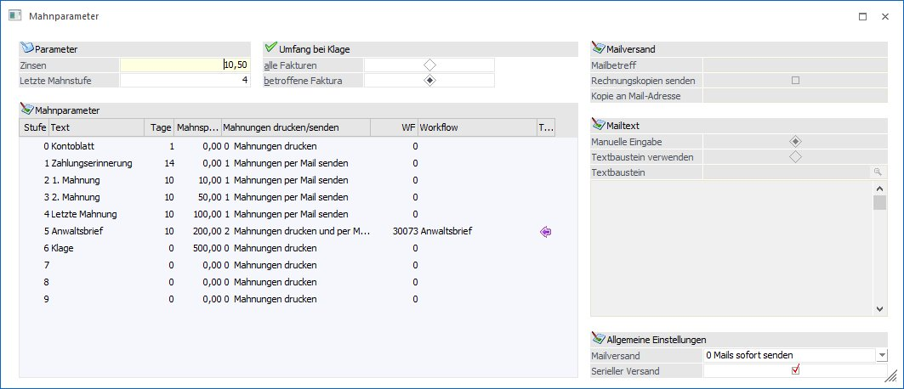

Die Mahnung ist so konzipiert, dass jeden Tag ein Mahnlauf durchgeführt werden kann. Dabei wird nicht bei jedem Mahnlauf die Mahnstufe erhöht, sondern für jede Faktura wird aufgrund der eingegebenen Parameter (Karenztage) festgestellt, ob diese neu gemahnt wird oder nicht.
Im Menüpunkt
1 Stammdaten
1 Mahnparameter
werden die Mahndaten (wann wird gemahnt, Höhe der Mahnspesen, Verzugszinsen %, etc.) festgelegt.

Ø Zinsen
Eingabe des Verzugszinsen-Prozentsatzes. Die Verzugszinsen werden pro Faktura tagesgenau errechnet. Bei Teilzahlungen werden die Verzugszinsen mit einem negativen Betrag ausgewiesen, womit die Verzugszinsen Sinnvollerweise nur mehr für den noch verbleibenden Restbetrag berechnet werden. Für Gutschriften und Vorauszahlungen werden keine Verzugszinsen berechnet (außer, die Vorauszahlung wird mit negativem Betrag gebucht).
Achtung
Mahnspesen werden nicht automatisch verbucht.
Ø Letzte Mahnstufe
Hier geben Sie die "letzte" Mahnstufe ein. Diese Eingabe steuert NICHT, ob noch weitere Mahnstufen hochgezählt werden (nach der letzten Mahnstufe könnte ja z.B. ohne Weiteres noch eine Stufe Anwalt und Klage kommen) sondern was mit den OPs geschehen soll, wenn eine OP des Kunden DIESE Mahnstufe überschreitet:
Im Konkreten können Sie damit steuern, ob dann ALLE Fakturen des Kunden diese neue höchste Mahnstufe erhalten sollen (also beim Anwalt landen) oder nur die eine betroffene OP eingeklagt werden soll.
In der Eingabemaske können folgende Felder bearbeitet werden:
Ø Stufe
Das Feld Stufe kann nicht editiert werden und zeigt die Mahnstufe an.
Ø Text
Eingabe des Textes der Mahnstufe. Dieser Text kann auch als Überschrift für die Mahnung verwendet werden.
Beispiel 1
Stufe 0 Kontoblatt
Stufe 1
Zahlungserinnerung
Stufe 2 1. Mahnung
usw.
Ø Tage
Eingabe der Karenztage. Nach Verstreichen der Karenztage wird die Mahnstufe in der Mahnvorbereitung erhöht.
Beispiel 2
Stufe 0 - Kontoblatt: 2 Tage
Stufe 1 - Zahlungserinnerung: 7 Tage
Stufe 2 - 1. Mahnung: 7 Tage
Würde bedeuten, dass eine Faktura 2 Tage, nachdem die Fälligkeit erreicht worden ist, die Mahnstufe 1 erhält. Nach weiteren 7 Tagen soll die Faktura die Mahnstufe 2 erhalten. Nach weiteren 7 Tagen die Mahnstufe 3, etc.
Das bedeutet, dass die Mahnstufe der OP solange hochgezählt wird, solange Karenztage eingetragen sind. Wenn Sie also möchten, dass nach der Mahnstufe 6 keine weitere Mahnzählererhöhung mehr stattfinden soll, geben Sie in der Zeile der Mahnstufe 6 keine Karenztage (also "0") mehr an.
Ø Berechnung des Mahndatums
Valutadatum der Faktura + Nettotage (Zahlungskonditionen) + Karenztage Mahnstufe 0 = Mahndatum für Mahnstufe 1.
Ø Mahnspesen
Eingabe der Spesen, die für diese Mahnstufe anfallen.
Ø Mahnungen drucken/senden
Über diese Spalte kann die Auswahl für die Erstellung der Mahnung ausgewählt werden:
ü Mahnungen drucken
Die Mahnungen
werden wie bisher gedruckt, es erfolgen keine weiteren Aktionen. Es können auch
keine weiteren Einstellungen für diese Option definiert werden.
ü Mahnungen per Mail senden
Die
Mahnungen werden erstellt. Zusätzlich wird pro Offene Posten geprüft, ob es ein
zugehöriges Autoarchiv-Dokument (Rechnung in WinLine FAKT erstellt) gibt. Ist
dies der Fall, wird das Archiv-Dokument extrahiert, mit einem Wasserzeichen
"KOPIE" versehen und an das Dokument (PDF) der Mahnung angehängt. Das so
erzeugte PDF wird als Gesamtes in die E-Mail gestellt und wird in weiterer Folge
sofort versendet oder steht im Postausgangsbuch (PAB) zur Versendung zur
Verfügung. Zusätzlich wird beim Originalausdruck die Mahnung statt auf dem
Drucker in den Spooler ausgeben.
ü Mahnungen drucken und per Mail
senden
Die Mahnungen werden erstellt. Dazu wird pro Offene Posten geprüft, ob
es ein dazugehöriges Autoarchiv-Dokument (Rechnung in WinLine FAKT erstellt)
gibt. Ist dies der Fall, wird das Archiv-Dokument extrahiert, mit einem
Wasserzeichen "KOPIE" versehen und an das Dokument (PDF) der Mahnung angehängt.
Das so erzeugte PDF wird als Gesamtes in die E-Mail gestellt und wird in
weiterer Folge sofort versendet oder steht im Postausgangsbuch (PAB) zur
Versendung zur Verfügung.
Zusätzlich werden alle Mahnungen ohne die
dazugehörigen Rechnungskopien auf dem eingestellten Drucker ausgedruckt.
Hinweis:
Beim Versenden der Mahnung über den Menüpunkt 'Mahnung' kann die Absender-Adresse über dem Ribbon 'Info Center und Makros' ausgewählt werden.
Ø WF
In dieser Spalte "WF" kann die Nummer jenes Workflows bzw. Aktionsschrittes angegeben werden, der bei Erreichen der jeweiligen Stufe angestoßen werden soll. Um nach Workflows oder Aktionsschritten zu suchen steht der Matchcode zur Verfügung (siehe dazu Workflow-Matchcode im "WinLine START"- Handbuch.
Ø Workflow
In dieser Spalte wird die Bezeichnung des Workflows/des Aktionsschrittes angezeigt.
Ø Typ
Je nach gewähltem Workflow-Typ wird hier das Symbol dazu angezeigt.
ü Symbol für WF-Startpunkt
ü Symbol für Aktionsschritte
Ø Mailbetreff
Eingabe des Betreffes der beim Versenden der Mail übergeben wird. Der Mailbetreff ist pro Mahnstufe editierbar.
Bei der Festlegung eines Mailbetreffs können auch Platzhalter verwendet werden. Es werden hierfür die Variablen des Konten- und Kontaktestamms (V050 und T045) zur Verfügung gestellt.
Beispiel
Kontonamen aus dem Kontenstamm: <VAR:50/3>
Abteilung aus dem Kontaktestamm: <VAR:45/58>)
Kontoname aus dem Kontenstamm und Abteilung aus dem Kontaktestamm: <VAR:50/3>, <VAR:45/58>
Wenn die eingetragene Variable beim Verlassen vom Feld Mailbetreff und/oder beim Abspeichern vom Mahnparameter als nicht korrekt erkannt wird, zeigt die Fehlermeldung "Im Mailbetreff werden ungültige Variablen-Platzhalter verwendet!" dieses auf. Der Mahnparameter kann mit einem fehlerhaften Variablen-Platzhalter nicht gespeichert werden.
Ø Rechnungskopien senden
Beim Aktivieren dieser Checkbox wird für jede betroffene Faktura geprüft, ob ein entsprechender Auto-Archiveintrag vorhanden ist. Ist ein Auto-Archiveintrag vorhanden, werden diese Fakturen mit einem Wasserzeichen "KOPIE" versehen und zur Mahnung hinzugefügt.
Wird kein Auto-Archiveintrag gefunden, weil z.B.: die Faktura nicht in der WinLine FAKT erstellt wurde oder es tritt ein Fehler auf, wird eine Meldung im Mahnungsprotokoll (siehe Originalausdruck - Mahnung) ausgegeben.
Ø Kopie an Mail-Adresse
Eingabe der E-Mail-Adresse an den zusätzlich die Mahnung per Mail gesendet werden soll.
Ø Manuelle Eingabe
Hinterlegung des Mailtextes in einem Eingabefeld.
Ø Textbaustein verwenden
Mittels Matchcode oder Eingabe kann der Textbaustein ausgewählt werden. Dabei stehen die Variablen aus dem Kontaktestamm im Textbaustein zur Verfügung.
Ø 0-Mails sofort versenden
Bei dieser Option werden die Mahnungen über das Postausgangsbuch versendet, dabei werden die Mails in den Ordner "Gesendet" verschoben.
Ø 1-Mails im Postausgangsbuch speichern
Bei dieser Option werden die Mahnungen im Postausgangsbuch im Ordner "Entwürfe" abgelegt und können zu einem späteren Zeitpunkt versendet werden.
Ø Serieller Versand
Der Versand der einzelnen Mails erfolgt nacheinander. Die Checkbox steht nur bei der Option "Mails sofort senden" zur Verfügung.
Ø Umfang bei Klage
Wird die höchste Mahnstufe (siehe oben) überschritten, kann hier vorgegeben werden, ob alle Fakturen oder nur die Fakturen, die diese höchste Mahnstufe überschritten haben, "geklagt" werden sollen.
alle Fakturen: Es werden bei allen offenen Fakturen des Kunden die Mahnzähler auf die Stufe nach der "höchsten Mahnstufe" gesetzt.
betroffene Fakturen: Es werden nur jene Fakturen "geklagt", die den entsprechenden Mahnzähler aufweisen.
Achtung
Wird die Option "alle Fakturen" verwendet und eine Faktura erreicht die Klagestufe, bekommen alle Fakturen ebenfalls die Klagestufe.
Beispiel
Letzte Mahnstufe ist 4 und es wurde die Option "alle Fakturen" gewählt. Kommt nun eine Faktura (von 10) in die Mahnstufe 5, bekommen auch die restlichen 9 Fakturen die Mahnstufe 5.
Durch Drücken der Taste F5 werden alle Angaben gespeichert. Durch Drücken der ESC-Taste wird das Fenster geschlossen.
Durch Anklicken des Buttons Gerichtskosten können Gerichtskosten, die bei zu definierenden Mahnstufen verwendet werden, betragsabhängig definiert werden.
Hinweis
Im Menüpunkt
1 Buchen
1 Fakturenänderung
können die Mahnstufen einzelner Fakturen manuell editiert werden.